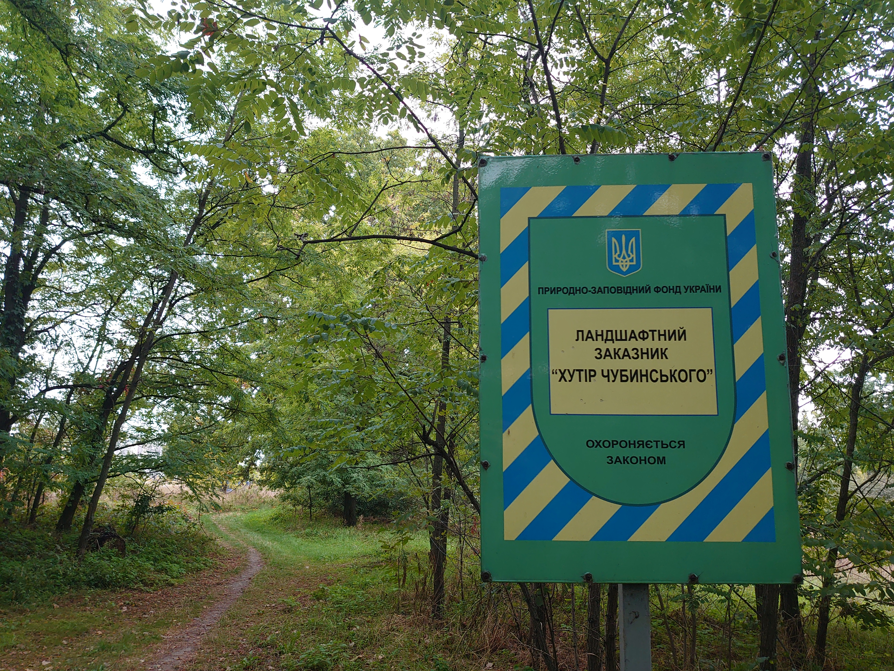
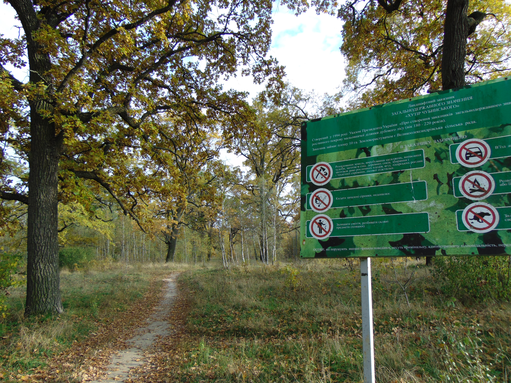
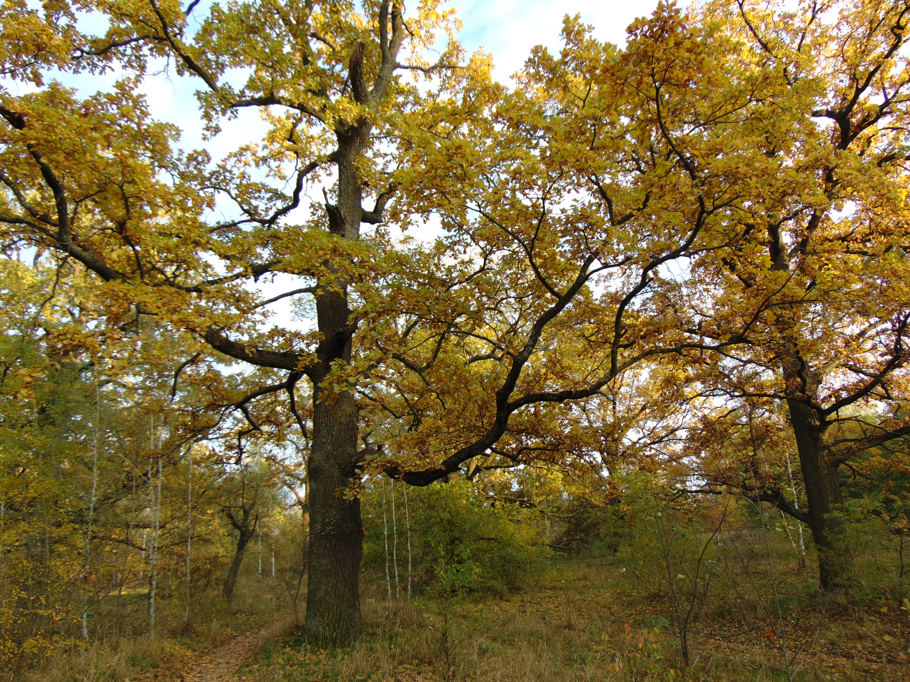
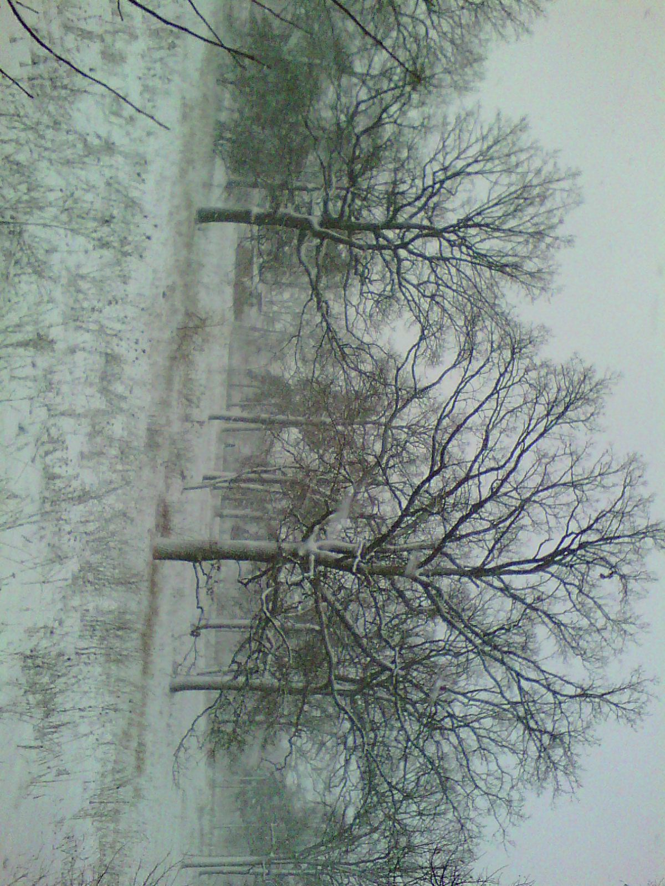
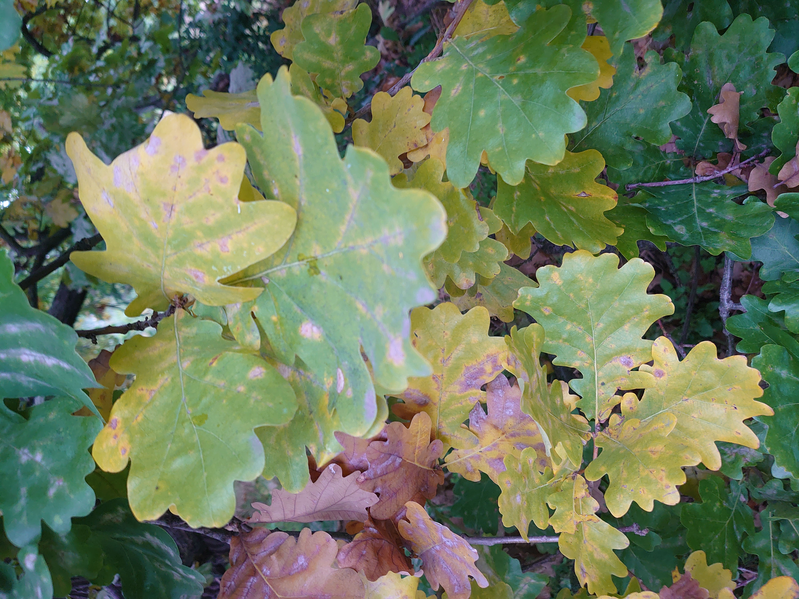
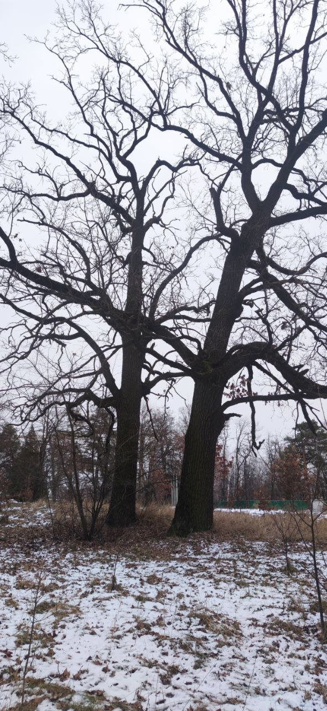
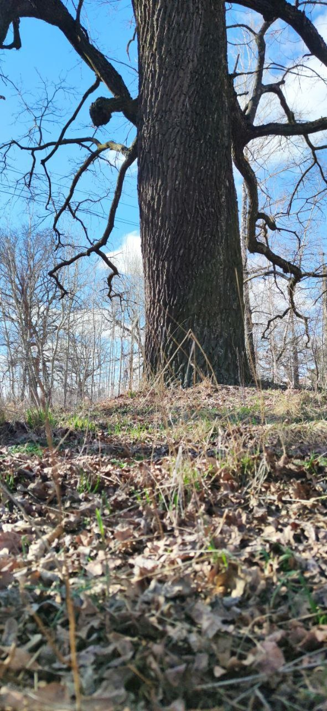

The Exhibition
 © Yuliia Kruhliak, 2025
© Yuliia Kruhliak, 2025
Ancient oaks in winter light — Chubynske reserve
 © Yuliia Kruhliak, 2025
© Yuliia Kruhliak, 2025
Measuring centuries of growth
Fragments of a living landscape

© Yuliia Kruhliak, 2025Landscape reserve "Khutir Chubynskoho" — protected by law

© Yuliia Kruhliak, 2025National heritage — the landscape reserve entrance

© Yuliia Kruhliak, 2025Autumn canopy — golden crown of ancient oaks
Old-growth forest memory

© Yuliia Kruhliak, 2025Winter silence — oaks resting under snow

© Yuliia Kruhliak, 2025Oak leaves — the palette of autumn transition
Biocultural continuity

© Yuliia Kruhliak, 2025Winter silhouette — twin oaks against grey sky
 © Yuliia Kruhliak, 2025
© Yuliia Kruhliak, 2025
Awakening — bare branches reaching towards spring
Silence between centuries

© Yuliia Kruhliak, 2025Panoramic view — the ancient grove at dawn
 © Yuliia Kruhliak, 2025
© Yuliia Kruhliak, 2025
The oldest oak of the reserve
Roots of persistence